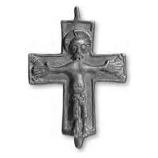
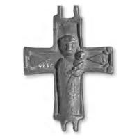

Catalog › CE-0473 · SYR2012-50
Encolpion bivalv de aliaj de cupru, cat. 50, NMIU Kiev
sfârșitul sec. X – începutul sec. XI (967–1033) · loc necunoscut · Muzeul Național de Istorie a Ucrainei (НМИУ), Kiev; colecția „siriană” B. I. și V. N. Hanenko, inv. valva anterioară: в 4626/244 (4208); valva posterioară: в 4626/241 (4205)
double-sided reliquary cross (enkolpion), altul; sfârșitul c. X – începutul sec. XI (967–1033); find spot unknown; kept at Muzeul Național de Istorie a Ucrainei (НМИУ), Kiev; colecția „siriană” B. I. și V. N. Hanenko.




Identificare
- Categorie
- Encolpion bivalv (relicvar)
- Material
- Altul
- Tehnică
- Turnare în relief; Gravare (incizie)
- Stare
- Întreagă
- Dimensiuni
- Î 64 × L 55 × Gr 8 mm
Iconografie
- Avers
- Răstignirea (Hristos cu perizoma)
- Descriere avers
- Hristos răstignit în perizoma lungă, sub genunchi, cu brațele întinse drept și mâini exagerat de mari, capul drept cu nimb crucifer, ochi deschiși, mustăți lungi și, posibil, o barbă scurtă (relieful bărbiei deteriorat). Părul scurt este marcat prin linii paralele drepte, pe jumătate șterse. Figura, în relief înalt, depășește cu 3–4 mm rebordul neted; picioarele sunt așezate pe rebord ca pe un suport. Pe capetele laterale, în relief plat, terminațiile crucii cu butoni în colțurile brațului transversal; astfel, Hristos este plasat pe fundalul unei cruci de formă neobișnuită pentru Răstignire.
- Revers
- Maica Domnului cu Pruncul
- Descriere revers
- Pe planul vertical, în relief înalt, Maica Domnului cu Pruncul pe brațul stâng; pe capetele laterale, în relief plat, aceeași cruce ca pe valva anterioară (capetele ascuțite cu butoni). Maica Domnului are trăsături mari, fără nimb, redată frontal. Pruncul, culcat pe brațul ei stâng, pe care ea îl susține cu mâna dreaptă cu palma exagerat de mare, este de asemenea fără nimb. Detaliile veșmintelor, executate cu dalta cu linii adânci, dar pe jumătate șterse, formează local o împletitură, local volute. Pe cap, un rudiment de maforion, ornamentat cu amprente foarte mici de ștanță triunghiulară. Capătul de sus, deasupra capului, unde ar fi putut fi o inscripție, nu este umplut.
Datare și atribuire
- Datare
- sfârșitul sec. X – începutul sec. XI (967–1033)
- Tipologie
- cruce-relicvar în relief, cu cruce cu butoni pe fundal
Descoperire
- Context
- Colecție (fără context)
- Coordonate
- 50.4536° N, 30.5164° E
- Precizia locului
- Loc de păstrare (loc de descoperire incert)
Păstrare și referințe
- Colecție
- Muzeul Național de Istorie a Ucrainei (НМИУ), Kiev; colecția „siriană” B. I. și V. N. Hanenko
- Nr. inventar
- valva anterioară: в 4626/244 (4208); valva posterioară: в 4626/241 (4205)
- Bibliografie
- A. A. Пескова, Л. В. Строкова, Христианские древности Византии в «Сирийской коллекции» Б. И. и В. Н. Ханенко, Sankt-Petersburg–Kiev, 2012, 225 p. [Peskova, Strokova 2012], p. 140, cat. nr. 50, ilustrația (fotografie și desen) de la p. 140. Publicată și în: A. A. Peskova, 2002, p. 254–262, fig. 1: 2.
- Figura
- ilustrația la cat. nr. 50
- Planșe
- Peskova, Strokova 2012, p. 140
- Observații
- Cruce-relicvar întreagă, cu brațe drepte și unghiuri drepte la încrucișare; lăcașurile valvelor foarte puțin adânci, cu margini interioare șterse, suprafață neuniformă, corespunzând doar aproximativ reliefurilor exterioare. Grosimea valvei anterioare 0,6–0,75 cm (0,3 cm fără reliefuri). Autoarele au stabilit că această cruce sau una asemănătoare a servit drept prototip pentru o cruce pectorală de argint cu imagini pe două fețe din tezaurul de la Lilla Klintegårda (Gotland), datat în sec. XI. Dimensiuni în sursă (în paranteză, înălțimea cu urechile): 6,4 (8,0)×5,5 cm; 6,45 (7,9)×5,5 cm; grosime 0,6–0,75 cm; 0,3–0,65 cm. Vechiul număr de inventar al Muzeului de Artă Hanenko (1925) este cel din paranteză. Album Hanenko, vol. III (needitat): valva anterioară tabla XXXVII, nr. 371; valva posterioară tabla XXXVII, nr. 372. Atribuirea autoarelor: Dunărea de Jos sau Rusia veche (?), sfârșitul sec. X – începutul sec. XI. Locul descoperirii nu este dat în sursă. Material în sursă: aliaj de cupru. Locul descoperirii nu e cunoscut cu precizie; punctul de pe hartă marchează locul de păstrare (Muzeul Național de Istorie a Ucrainei), nu locul descoperirii. Coordonate: nu sunt date în sursă.
Citare: Corpus Encolpiorum, CE-0473, Encolpion bivalv de aliaj de cupru, cat. 50, NMIU Kiev, --root/piese/SYR2012-50/ (accesat 2026-10-20).